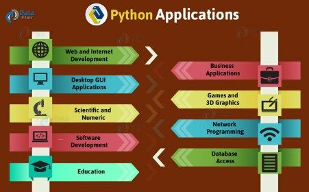
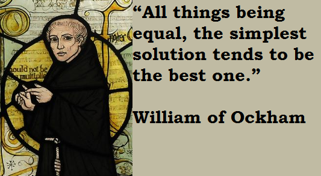
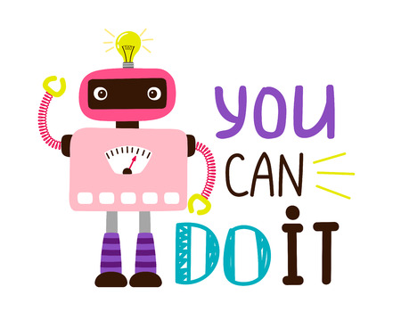

Python总结与练习
至此我们基本把Python中最重要的语法和概念介绍了一遍，包括变量的定义与基本运算，循环与条件语句，函数的定义和使用，面向对象编程等等。基于这些内容我们已经能写很多很多程序，实现很多很多功能了。
除此之外，Python中还有一些概念，如迭代器与生成器、错误与异常处理、命名空间、多线程等等，由于不是最常用的，所以没介绍，后面我们碰到了再学。
简单练习
我们先来做一些只涉及到基本语法的练习题，锻炼一下对基础知识和编程思维。
请小仙女写一段Python代码，分别实现以下功能：
- 输入一个年份，该代码可以判断并输出该年是否为闰年；
- 输出一个10行的杨辉三角；
- 给定三条边长，判断是否可以构成三角形；
- 找到一个全为数字的list中的最大值、最小值、均值、中值；
- 给定一个日期的年月日值，输出这个时期是当年的第几天；
进阶练习
在我们平时写程序的过程中，大部分时候都是配置一些环境，安装一些包，导入包中的一些模块，查一下这个包的文档，看看某个类和接口怎么用，做一些简单的处理，写一些逻辑，然后就可以了。
更常见的情况是我们想要实现某个简单的功能，比如图片读取，或者文件读取，然后就去百度或者谷歌搜索“Python 图片读取”，“Python 文件读取”，看看别人都是怎么做的，然后得到一些启发，读懂并且跑通别人的代码，看看别人都用了什么包什么接口，然后有针对性地去安装和使用。
更前沿的内容比如最新的研究动态，科研成果，最新算法，可能就需要去谷歌学术搜索相关论文，然后找找作者公布的源代码去跑一下试试了。
对于一些工程性的问题，比如用Python搭建网站，写软件，爬虫，我们需要学的是对应框架，比如Django，Qt之类的，这些东西就不仅要求我们跑通别人的代码，还需要对别人的代码或者工程有比较深入的理解，会套用到我们自己的使用场景中，也要掌握一些其他相关的语言和技术，有分析和探索能力。
所以其实油油认为，最重要的是百度的能力，读代码的能力，学习的能力，再加上一点创造性思维。
从广义角度讲，我们需要明确地知道Python几乎可以做任何你能在电脑和手机上做的事，以及在电脑和手机上用到的东西；
从狭义角度讲，我们需要熟悉自己最关注的应用和功能，了解自己需要用的那几个包，保证可以用Python实现自己想要的功能，让Python为我所用。

为了简单锻炼这方面的能力，我们来做几个小练习吧。请小仙女分别从网上找Python代码实现以下功能：
- 冒泡排序；
- 在一个excel表格中写一行数字，然后用Python读入这行数字，并且输出出来；
- 将Python读入的这行excel数字使用冒泡排序进行排序，然后输出结果；
- 读入一张图片，然后将这张图片转变为灰度图像，并且分辨率调整为原来的一半，再保存到本地。
在找代码、实现这些功能时候，请小仙女注意思考以下的问题：
- 找到的代码能跑通吗？能读懂吗？出bug了怎么办？
- 代码用到了哪些包，哪些函数？这些函数的文档或使用说明在哪里可以找到，有哪些参数，分别做什么用？
奥卡姆剃刀原则与编程哲学
奥卡姆剃刀是一个哲学命题，最初由14世纪英格兰、圣方济各会修士奥卡姆的威廉（William of Occam，约1285年至1349年）提出。他说：
切勿浪费较多东西去做，用较少的东西，同样可以做好的事情。
Numquam ponenda est pluralitas sine necessitate.（避重趋轻）
Pluralitas non est ponenda sine necessitate.（避繁逐简）
Frustra fit per plura quod potest fieri per pauciora.（以简御繁）
Entia non sunt multiplicanda praeter necessitatem.（避虚就实）
其核心思想是“如无必要，勿增实体”，“简单的就是最好的”。这一思想在哲学、管理学、语言学等领域都有应用。

在编程方面，结合我的经验，我们的编程哲学主要是：
- 众所周知天下文章一大抄，天下代码也是一大抄，关键在于去哪里抄，抄什么，怎么为我所用；
- 从最简单的地方开始写和学；
- 永远用最简单快捷的方式实现我们想要的功能；
- 一边写，一边学，先写后学，在写中学；
- 积跬步以至千里，在最简单的核心模型上添枝加叶，最终实现我们想要的功能；
- 写代码从来都不是最困难的事情，困难的事情是算法，代码是服务人的，不是难为人的；
- 不要重复造轮子，一个功能不要反复去写，即如果业界已经有工人的软件或者库，你又知道自己很难比人家写的更好，那就不要自己再写一遍了，除非你是在学习轮子。
比如我们想写一台车出来，要想的不是一下写一台车，而是先写一个盒子，再往上面加四个轮子，然后我们就可以说实现了一台玩具车了。
在玩具车的基础上加上动力模块，它就可以自己跑起来，再加上刹车系统转向系统，就不失为一辆车了。然后我们再考虑设计，内饰，照明等等其他东西，逐渐完善。
又比如我们想写一个网站，要想的也不是一下写一个网站出来，而是先写一个网页并且在本地浏览，然后在服务器部署成功，然后在这个网页上链接其他页面，这样就不失为一个网站了。然后我们再考虑页面设计。
当然如果我们从一开始就发现已经存在别人发布的网站模板，框架，那就不要犹豫，直接用别人的，在别人的基础上做改动，节省自己的时间。
总结
简单的Python入门教学就完成啦，以后有别的内容我们再做补充。
最后希望小仙女能在学中用，在用中学，多动手，学的开心，用的开心，快乐科研，快乐生活，没有bug，没有烦恼！
